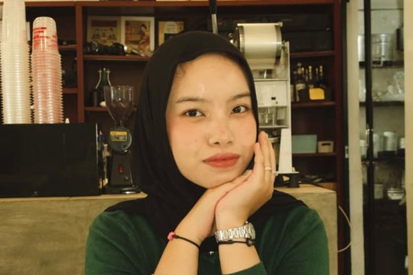
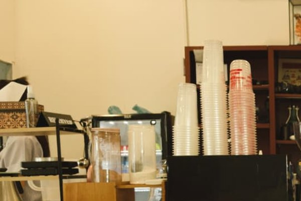
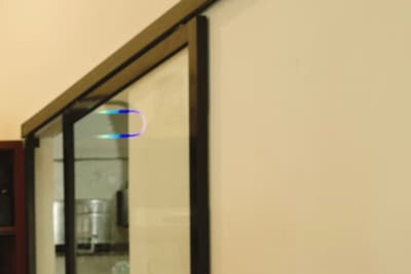

Foto Pilihan



Video Pembelajaran
Referensi lain: YouTube (terbuka di tab baru).
Testimoni
Foto-foto Naila selalu terlihat hidup dan penuh cerita. Hasilnya rapi dan enak dipandang…



Referensi lain: YouTube (terbuka di tab baru).
Foto-foto Naila selalu terlihat hidup dan penuh cerita. Hasilnya rapi dan enak dipandang…